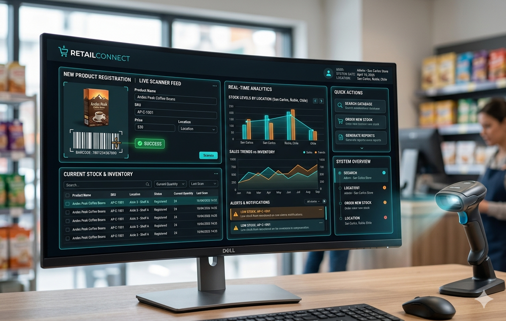
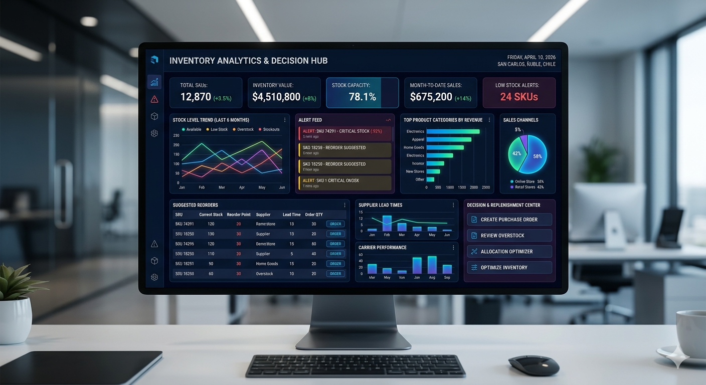
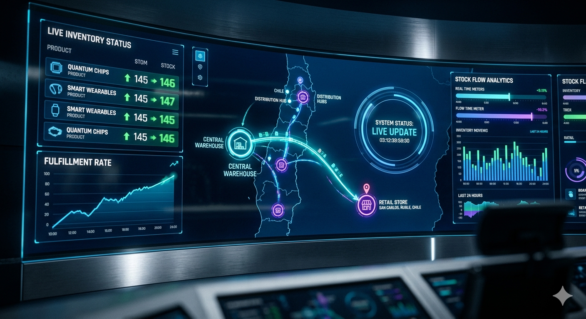
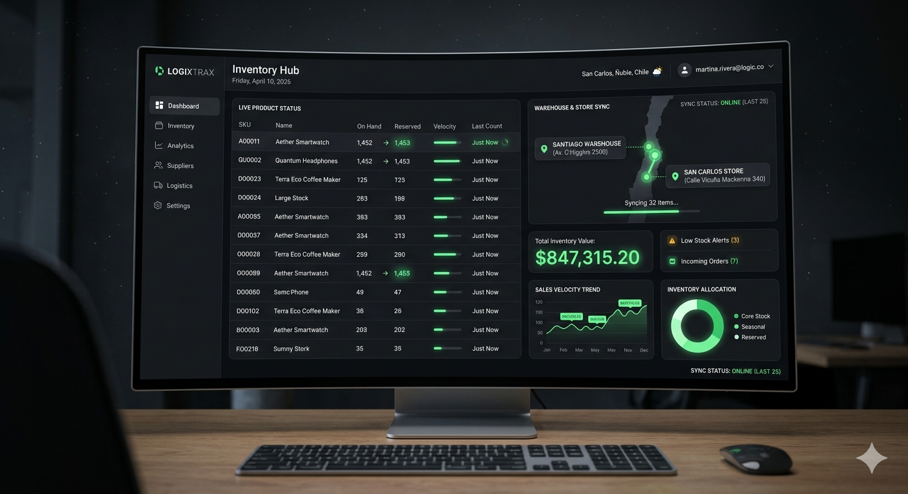
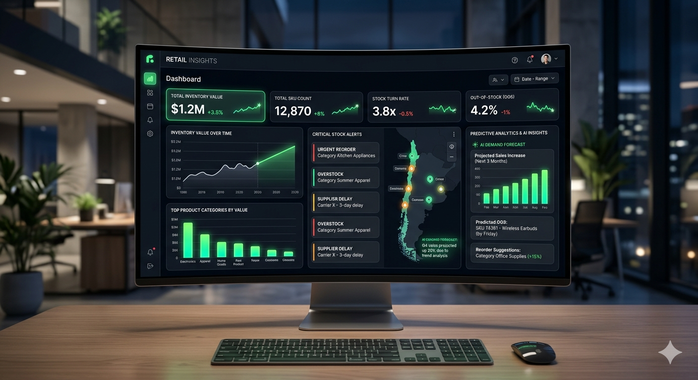
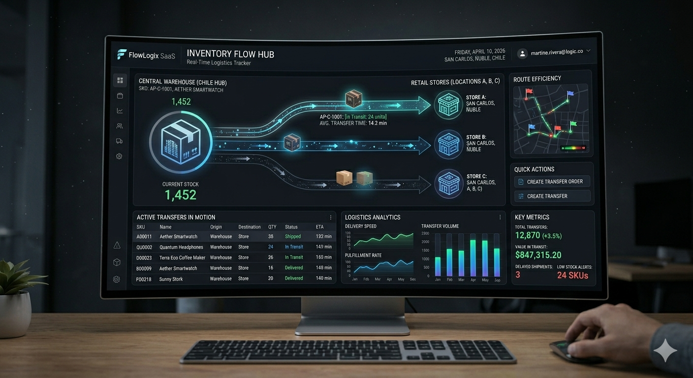
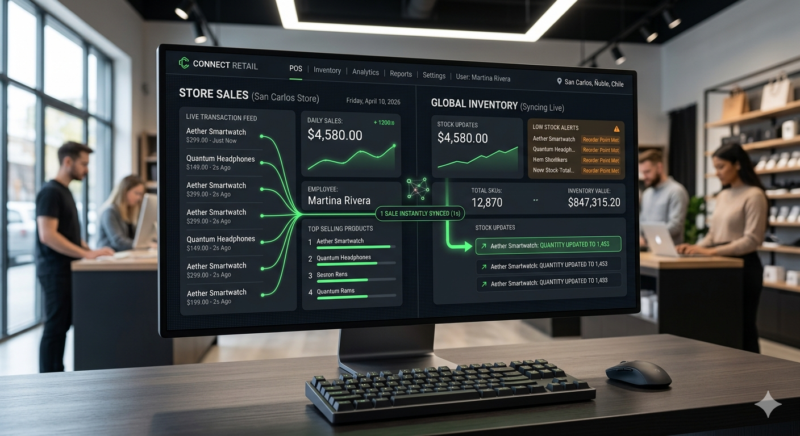

Sistema inteligente de inventario para retail moderno
Controla, automatiza y escala tu negocio con datos en tiempo real
Optimiza tu operacion, elimina errores y toma decisiones con datos reales.
12,540
$2.3M
Actualizado en tiempo real
18
Entrada de productos, transferencias y ventas en tiempo real.
Visualiza como StockFlow transforma la gestion de inventario en tiempo real.
Las empresas retail pierden control de su inventario debido a procesos manuales, sistemas desconectados y falta de visibilidad en tiempo real.
Cada producto es escaneado al llegar, validando automaticamente contra el sistema.

Los productos se almacenan por unidad o caja con trazabilidad total.

Cada venta o movimiento impacta el stock inmediatamente.

Datos claros para tomar decisiones sin suposiciones.
"Menos errores. Mas control. Mejores decisiones."

Stock en tiempo real sin errores.

Integracion automatica con ventas.

Control total de movimientos.

Decisiones basadas en datos reales.
Reduce errores de inventario y evita perdidas económicas por diferencias de stock.
Automatiza procesos y elimina tareas manuales innecesarias en tu operacion diaria.
Accede a datos en tiempo real para tomar decisiones estrategicas con seguridad.
Visualiza y controla todo tu inventario desde un solo sistema centralizado.
StockFlow no solo organiza tu inventario. Transforma la forma en que gestionas tu negocio.